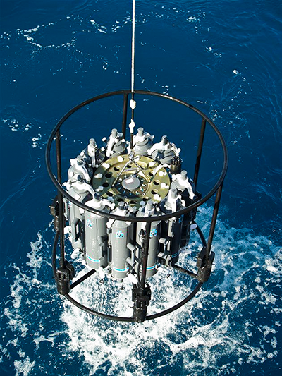

Ocean Salinity Change
This page has been created for the media in support of "Ocean Salinities Reveal Strong Global Water Cycle Intensification during 1950-2000" by Paul J. Durack, Susan E. Wijffels and Richard J. Matear - published in Science Magazine 27th April 2012. DOI: 10.1126/science.1212222
ALL MATERIAL IS EMBARGOED WITH SCIENCE AND IS NOT FOR RELEASE UNTIL 2PM U.S. EASTERN TIME, THURSDAY 26th APRIL 2012.
To support this publication a media release and some additional FAQs are being provided for media use.
The following images are available to support the Durack et al. (2012) publication.
Figure S1. A schematic representation of the global water cycle, with the key role of the ocean and surface rainfall and evaporation fluxes expressed (Paul Durack) - Clicking HERE will download a high-resolution *.tif file suitable for print.
Figure 1G. Surface salinity changes for 1950 to 2000. Red indicates regions becoming saltier, and blue regions becoming fresher (Paul Durack) - Clicking HERE will download an archive containing a high-resolution *.tif and *.eps file suitable for print.
Photo 1. Monitoring of the Southern Ocean using arrays of
anchored and drifting instruments reveals freshening of deep waters
around Antarctica. Some of the extra melting of ice around the edge of
Antarctica is flowing into the sea and getting carried down to the deep
ocean by ocean currents. (CSIRO: Steve Rintoul) - Clicking HERE will download a high-resolution *.tif file suitable for print.
Photo 2. Lined with bottles triggered at different levels of
the ocean, this conductivity, temperature and depth profiler bearing a
suite of sampling bottles is a mainstay of oceanography. It can be
deployed to depths of 6,000 metres to study changes in ocean temperature
and salinity. (CSIRO: Ann Thresher) - Clicking HERE will download a high-resolution *.tif file suitable for print.

Photo 3. Lined with bottles triggered at different levels of
the ocean, this conductivity, temperature and depth profiler bearing a
suite of sampling bottles is a mainstay of oceanography. It can be
deployed to depths of 6,000 metres to study changes in ocean temperature
and salinity. (CSIRO) - Clicking HERE will download a high-resolution *.tif file suitable for print.

Photo 4. Monitoring of the Southern Ocean using arrays of
anchored and drifting instruments reveals freshening of deep waters
around Antarctica. Some of the extra melting of ice around the edge of
Antarctica is flowing into the sea and getting carried down to the deep
ocean by ocean currents. (CSIRO: Steve Rintoul) - Clicking HERE will download a high-resolution *.tif file suitable for print.
Photo 5. Akin to having a fleet of miniature research vessels,
the global flotilla of more than 3,000 robotic profiling floats provides
crucial information on upper layers of the world's ocean currents.
(CSIRO: Alicia Navidad) - Clicking HERE will download a high-resolution *.tif file suitable for print.
Video 1. Selected footage of oceanographic videos for use in broadcast (CSIRO) - Clicking HERE (783Mb) will download a high-definition *.mp4 file suitable for broadcast, a lower resolution file is available from HERE (131Mb).